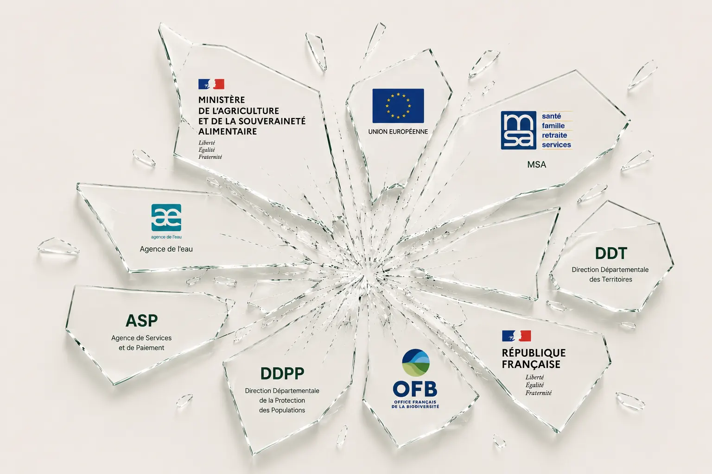

Le registre phytosanitaire numérique est obligatoire au 1er janvier 2027, comme la facture électronique. Agri-IA vous prépare dès aujourd'hui, sans effort supplémentaire.

Depuis le champ ou la cabine, vous décrivez l'intervention à voix haute, comme à un collègue.
Parcelle, produit, dose, surface : Graine identifie chaque information et vérifie sa cohérence.
Un résumé s'affiche. Vous validez en un clic, et le registre est à jour.
Chaque intervention dictée pour votre registre alimente aussi votre suivi économique par parcelle : coût réel, marge, stock. La conformité ne vous coûte plus de temps, elle vous rapporte de la visibilité sur vos marges.
Non. Vous continuez à dicter vos interventions comme aujourd'hui : Graine les structure au bon format en arrière-plan.
Non. Le démarrage prend 5 minutes, sans carte bancaire. Dès votre première intervention dictée, votre registre est déjà à jour.
Graine vérifie automatiquement chaque produit et chaque dose avant l'enregistrement, et vous prévient en cas de doute.
Plus vous démarrez tôt, plus votre historique est complet le jour d'un contrôle. Vous pouvez reprendre la main dès aujourd'hui.

Démarrage en 5 minutes, sans carte bancaire.